1登入、進考勤管理
電腦、手機都可以用。手機建議把網址加到主畫面。
登入
- 打開 dzy.mozhuting.com。
- 帳號填你的同仁編號（DZY 開頭），再填密碼，按 登入。
- 忘記密碼：按登入鈕下面的「用 LINE 重設密碼」。
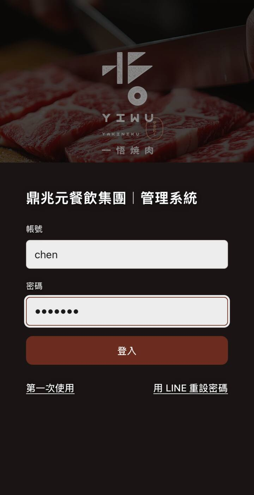
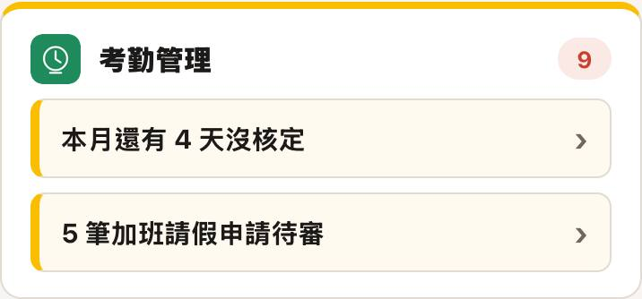
從首頁直接點進去
登入後首頁會列出待辦。考勤管理那一格會寫：
- 本月還有 N 天沒核定：點了直接到核定工時。每月 1～5 號上個月還有沒核的，會多一行「11 月還有 N 天沒核定」（月份照實際）；上個月的是另外讀的，本月先出來，上個月讀到前提醒下面會寫「上個月的還在讀取，請稍等…」，讀到了才補進去；讀不到會寫「上個月的資料這次讀不到，請用上方日期選到上個月確認」（不影響本月）。
- N 筆加班請假申請待審：點了直接到申請審核。
右上角紅色數字＝兩種加起來還有幾件。數字只算你核得了的：你只能看、不能核的同仁（例如支援到別店的同仁、區域裡只看的門市）不算在內。
從選單進去
電腦：左邊選單「人資部門」底下的 考勤管理。手機：上方那排圖示往左滑，找到「考勤管理」。
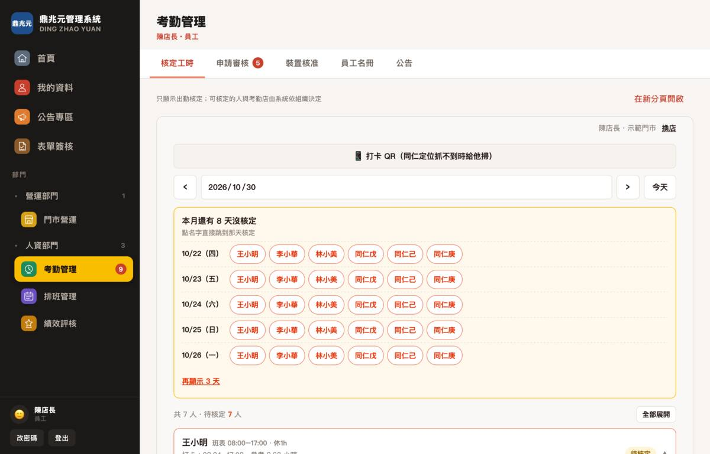
管兩家以上的店：先選門市
第一次進來會問你要進哪家店，點一家就好。
要換別家：畫面右上「你的名字・門市名」旁邊的 換店。
只管一家店的人不會看到這一頁，直接進去。
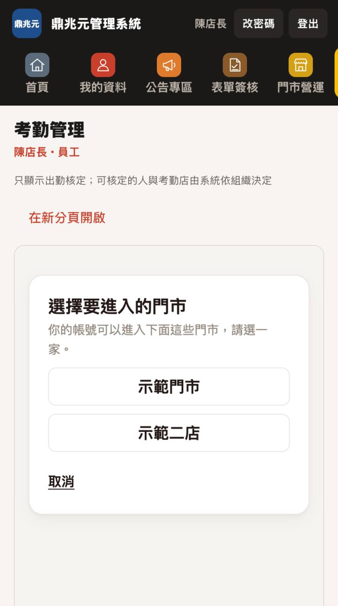
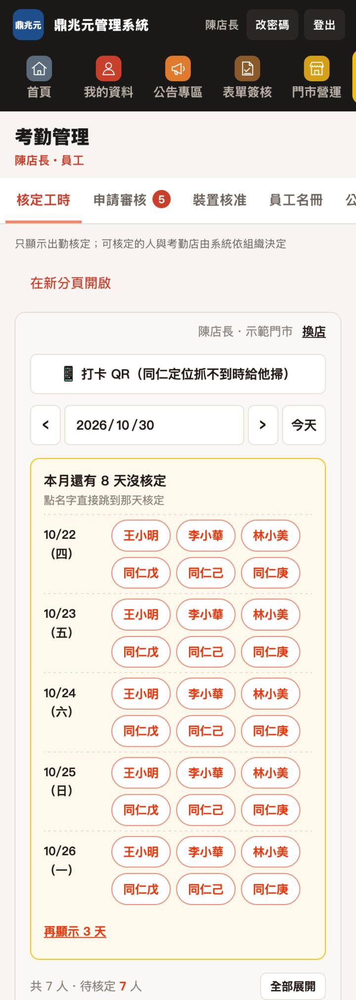
換日期
- ‹ ›：前一天、後一天。
- 點中間的日期可以直接選一天；今天 回到今天。
- 黃色框「本月還有 N 天沒核定」把還沒核的人按日期排好，點名字就跳到那天。每天從這裡開始最快。每月 1～5 號也會列上個月沒核的天，標題寫成「11 月還有 2 天、本月還有 1 天沒核定」；上個月的是另外讀的、晚一點才補進來（讀到前寫「上個月的還在讀取，請稍等…」，讀不到寫「上個月的資料這次讀不到，請用上方日期選到上個月確認」），開頁先看到的是本月的人，不會為了等上個月卡住。天數只算你核得了的日子；整天都是你只能看的人，會排在最後面，前面寫「另有 N 天只能看」。
上方分頁
核定工時、申請審核（紅色數字＝你審得了的待審幾筆；只能看的單照樣列在清單，標題下會寫「另有 N 筆只能看」）、裝置核准、員工名冊、公告。這份手冊講前兩個。
★一頁核定（手機、電腦都是）
開「考勤管理 → 核定工時」，畫面就是這一頁：沒問題的人一鍵核完，有異常的人一張卡按一下。不用一位一位點開。11/14 起電腦也是這個畫面；管兩家以上的店選「全部門市」，會按門市分組，每家一顆「一鍵核定」。11/16 起只剩這一頁：舊的「完整頁」收掉了，它的功能都搬進每張卡片的「手動修改」。
時間軸怎麼看（11/16 起）
每個人一條橫軸，從左到右是時間，上方括號＝班表時段（括號兩端寫班表起訖）、條下寫實際打卡時間、多做或少做的段落在條下直接寫分鐘數（例 +94、−40），每小時一條淡格線。顏色（科技風，11/16 Eason 選）：淡靛藍底＝班別（班表）；翡翠綠＝出勤（照班表上班），淡綠＝班表外多做、全天合計沒超過 8 小時（照算、不用加班單）；橘色＝加班有單，橘色斜紋＝超過 8 小時、沒有加班單（要補單或不認列）；天藍＝出差；紫色＝忘打卡、忘打卡單已核准，紫色斜紋＝缺卡、還沒有單；紅色斜紋＝遲到、早退、沒有單的缺勤；灰藍＝請假；淡紫＝補休；反向斜紋＝單還在審；細灰線＝空班（兩段班中間、中午不打卡休息）。畫面最上方有同一份顏色說明。班表寫在姓名右邊。
建議補的單以 15 分鐘為單位（11/16 起）：每段開始往後、結束往前取到 15 分，不到 15 分鐘的不列。例：打卡多出 08:57–09:00、13:00–14:34、16:57–18:00、22:00–22:03 → 建議補加班單 13:00–14:30、17:00–18:00（共 2.5 小時）。上班前、下班後 15 分鐘內不算（11/16 起）：緊接班表或加班單前後的 15 分鐘先扣掉再取整，扣完合計不到 30 分鐘就不用補加班單。例：班表 12:00–16:00、18:00–22:15，打卡 11:58–16:19、17:54–22:20 → 不用補單。
手動修改、只看重點／全部展開（11/16 起）
每張卡片都有 手動修改：按了就在卡片下面展開以前舊畫面那整張卡——改時段、加一段、休息併段、請假註記（最多 4 種）、出差時數、遲到分鐘、重複打卡選哪張、已核准申請作廢、幫同仁開單、這天還沒審的申請、送出核定。右上角 只看重點／全部展開：只看重點＝只有時間軸和按鈕，要手動修改的人才按；全部展開＝每張卡的手動修改都攤開（習慣以前舊畫面的人用這個）。選了會記住。
等同仁補單（11/16 起）
缺卡、缺單又還沒送單的人，卡片多一顆 請同仁補單，先放到「等同仁補單」：按了這人先移到下面「等同仁補單」，不算在「還剩 N 人」。同仁補好單送進來會標「單送來了」，按 去核定；核定成功就自動結案。不想等了按 不等了。這份清單存在系統裡，能核這家店的人都看得到；每月最後幾天管理系統首頁會提醒還有幾筆沒補。超過 4 天或同仁沒綁 LINE 的不會有這顆（同仁自己補不了，要幫同仁開單）。
畫面由上到下
- 深色標題：店名、要處理的那天（例「昨天 11/9（一）」）、右邊「只看重點／全部展開」與「還剩 N 人」。標題下面「前一天／日期／後一天」可以自己選日期。再下面是「人資退回」「本月還有 N 天沒核定」（只顯示一行，點了才展開名單，點名字跳到那天並打開那人的手動修改），以及摘要：要你處理、等同仁補單、可一鍵核定（檢查中那幾秒這格寫「檢查中」、不寫人數）、「排班工時｜實際工時｜請假時數」（這天名單上所有人合計：排班工時＝班表扣掉休息；實際工時＝打卡上班到下班合計，不是核定時數；請假時數＝已核准的請假與出差）。系統自己挑最近一天還有人沒核定的（昨天先，再往前）；這天處理完會自動換下一天。今天不會自己出現：都核完時，日期列「後一天」右邊會多一顆 核定今天（手機在日期下面一整列），按了直接切到今天；班表還沒結束的人會寫「今天還沒下班」。請假只有部分時數、當天又完全沒打卡的人會列成異常，要逐筆核對。
- 綠框「沒問題 N 人」：有排班、打卡齊全、上下班跟班表差在 15 分鐘內（早到、晚走也算）、打卡段數和班表一樣（中途離店不算）、班表不超過 8 小時、沒有待審的單。按 一鍵核定 N 人 就核定，沒有確認視窗；核完會寫「已核定 N 人，要改可在下面「已核定」按手動修改重新送出」；按「展開逐筆看時間軸」可以一個一個看。11/14 起綠框改叫「核定通過」：照打卡＋單算好、先跟打卡系統檢查過（檢查那幾秒，這些人先放在灰色「檢查中」、按鈕不能按，見下面「先檢查、再核定」）；原本在異常區、但打卡＋單對得上的人也會移進來。不會過的人標「未符合」，寫出要補齊的單。
- 「有異常 N 人，逐筆確認」：一人一張卡，時間軸、同仁送的單、比對結果。按一個主要按鈕就完成（見下表）。依嚴重程度排：缺卡 → 還不能核定 → 請假卻有打卡／申請對不上 → 單待審 → 加班 → 遲到早退。
- 「現在不能核定 N 人」：少打卡又沒有單、排休卻有打卡沒有加班單、單要等上層審核。先請同仁到 LINE 補單；按「先跳過」只是這次不看（不會改任何資料、不會通知同仁）。
- 等同仁補單、已核定 N 人（點開看時間軸，要改按手動修改重新送出）、只能看（不在你核定名單的人）、未出勤（沒打卡也沒排上班；要核整天請假或出差按手動修改）、其他申請 N 筆（不是這天卡片上的待審單，可直接核准或退回）。
| 卡片上的標籤 | 主要按鈕 | 其他按鈕 |
|---|---|---|
| 遲到／早退達 15 分鐘 | 照班表 X 小時（分鐘由薪資照扣） | 手動修改 |
| 早到／晚走 15 分鐘以上、沒有加班單 | 照班表 X 小時 | 照打卡 X 小時（打卡不超過 8 小時才有） |
| 班表超過 8 小時 | 照班表 X 小時 | 手動修改 |
| 少打卡、有待審忘打卡單 | 核准單，核定 X 小時（先核准單再核定） | 退回單 |
| 超過班表／排休打卡、有待審加班單 | 核准單，核定 X 小時 | 退回單 |
| 待審假單、出差單 | 核准單，核定 X 小時 | 退回單 |
| 申請和打卡對不上 | 退回，請同仁改時間 | 手動修改 |
| 少打卡、沒有單（超過 4 天） | 主管幫同仁開忘打卡單 | 先跳過 |
| 少打卡、沒有單（4 天內）。同仁有綁 LINE：請同仁補單；沒綁 LINE：按手動修改送出核定，被擋時會跳出幫同仁開單的表單 | 請同仁補單，先放到「等同仁補單」／先跳過 | 手動修改 |
| 正職未滿 8 小時（上班＋出差＋假單不到 8 小時） | 手動修改（在那裡補假單或補休單） | — |
| 有待審單（還沒核定、同仁送的單還沒審；11/18 起） | 卡片上直接按那張單的「核准」或「退回」，審完自動重新檢查。單沒審完不能核定（11/20 起打卡系統也會擋） | 手動修改、先跳過 |
| 假別要確認（額度已用完、計時同仁沒有補休…；額度剩一點但不夠，要按核定才擋）、事假超過 14 天、假單沒有時數、核定要登記已核准的假別 | 手動修改（核定要登記假別是你在這裡做的事，不用請同仁補單） | 先跳過 |
| 沒有班表、多張申請、重複打卡、遲到又晚走、中途離店、排休日有假單、出差單沒時數、打卡比加班單多 30 分鐘以上、時數算出來不合理… | 手動修改 | — |
先檢查、再核定：灰色「檢查中」（11/18 起）
打開核定工時時，有些人要先跟打卡系統核對過，才知道能不能一鍵核定。這些人會先放進一個灰色框，標題寫「檢查中 N 人」（還在等最新資料、還沒開始檢查時寫「待檢查」；最新資料讀不到、先顯示上次資料時寫「還沒檢查」），說明寫「正在跟打卡系統確認時數，確認完會自動分到下面各區」。
- 這時不顯示時數，「一鍵核定」和卡片上的「核定」都先不能按（按鈕上寫「檢查中…」）。通常幾秒到十幾秒。
- 「手動修改」照常可以按，不用等。改了時段、假別、遲到分鐘之後，這張卡也一樣：當下就標「檢查中…」、舊結果變淡、核定鈕先停用，不會讓你看到舊時段的「核定通過」就按下去。
- 改時段後檢查超過 10 秒沒回來：送出鈕先恢復可按，卡片下面寫「檢查逾時…可以直接按送出核定，送出時系統會再檢查一次」。檢查晚一點才回來時，只要你這段時間沒有再改時段、假別或遲到分鐘，結果會自動補上，原本的逾時提示就消失；如果你已經又改過，舊的結果不會顯示，等新的檢查。晚回來的是失敗，就維持逾時提示。你若已經按了送出，送出照常，晚回來的結果不會動到送出後的畫面。時段只填一邊時，舊的核定通過／未符合框會先收起來，寫「時段填完才檢查」。
- 檢查完，灰色框裡的人一次換成最終結果：放進「核定通過」，或移到「有異常」寫出原因。上方摘要的「可一鍵核定」檢查中寫「檢查中」，「要你處理」不含灰色框裡的人。
- 已核定、只能看、未出勤、等同仁補單、有待審單這些不用檢查的人，照常顯示、位置不動。
11/20 實測過，等超過 30 秒時你可以這樣放心用：
- 逾時後「一鍵核定」照常可以按，不會被卡住；手滑連按好幾下，也只會送出一次。
- 檢查晚回來時，畫面會自己更新，不用重新整理。「一鍵核定 N 人」的人數可能突然變多：多出來的是檢查剛通過、移進「核定通過」的人。
- 按下去送出的，是你按下那一刻畫面上的名單。按完才多出來的人不會被一起送，他們留在畫面上，再按一次就好。
- 再檢查一次 只在檢查失敗（讀不到）時才出現。還在等候、檢查還在跑的時候不會出現，不用找它，等畫面更新就好。
先看到上次的資料，再自動換成最新（11/20 起）
為了讓核定工時分頁很快打開，系統會先把公司主機上保存的上次資料放上來，同時去向打卡系統讀最新的，讀到了再整份換掉，不用自己重新整理。
- 還在讀最新資料時，上方會有一行灰字：「這是 今天 13:00 的資料，正在讀取最新資料，讀到後就可以核定…」（不是今天的資料，時間會寫成「11/19 18:00」這樣）。這段時間畫面是舊的，要檢查的人核定按鈕按不了，灰色框寫「待檢查」。最新資料一到，畫面自動換掉，接著開始檢查。
- 最新資料讀不到：灰字改寫「讀不到最新資料，下面是 今天 13:00 的舊資料，不能核定」，下面出現「考勤資料沒載入成功」和 重新載入，灰色框寫「還沒檢查」。請按重新載入，或稍後再開。
- 畫面上一行小字「資料更新於 今天 13:00・從 Mac mini 讀取」：告訴你這份資料是幾點的。打卡系統那邊回應比較慢時，後面會多一句「打卡系統回應較慢，先顯示這份；送出時仍以打卡系統為準」。系統會在背景隔幾秒再讀幾次，資料有變就自動換成新的。
- 你正在操作時不會被換掉：手動修改開著、正在輸入、跳出對話框、送出中，畫面都不會動，只在下方出現一條「打卡系統有更新的資料」加一顆 更新。你方便時按，它才換，而且會停在你剛剛看的那張卡。
已核准的請假／出差單，直接一鍵核定（11/18 起）
同仁那天有已核准、而且有填起訖時段的請假單或出差單（例：補休 15:00–16:30），而且打卡系統檢查通過，這位同仁會直接出現在「核定通過」，按 核定 N 小時 就好。系統會把假別和時數一起登記，跟你展開「手動修改」填好請假註記再送出一樣，不用再進去填。
例：班表 17:00–23:30，打卡 16:58–23:38，補休 15:00–16:30 已核准 → 核定通過 6.5 小時（核定時數是上班＋出差，請假時數不算在內；但正職要滿 8 小時時有算：6.5＋補休 1.5＝8）。
下面這些情況不會進「核定通過」，照舊在「有異常」逐筆確認：
- 同一天有多張單：只有每張都已核准、有填時段、而且同一種假是分段請（時段不重疊）才會進「核定通過」；混著加班單、忘打卡單，或有沒填時段的單，要逐筆確認。
- 手動改出跟假單重疊的上班時段：打卡系統會擋下，寫「核定上班 09:00–12:00 跟已核准的事假 09:00–11:00 重疊 120 分鐘，同一段不能同時算上班和請假，請把上班時段改到假單以外（要算上班就先作廢那張單）」。照字面把上班時段改到假單以外就能送（剛好接著，例如假到 11:00、上班 11:00 起，不算重疊）。有填時段的出差單也一樣。
- 假單沒填時段（例：事假 2 小時）、上班加假單比班表多：卡片多一行黃字「上班＋假單比班表多 N 小時」，只是提醒、不擋，請自己確認上班時段或假單時數。
- 假別或時數有問題：標「假別要確認」（額度已用完、計時同仁沒有補休…）、「事假超過 14 天」或「假單沒有時數」，按手動修改核對。額度剩一點、但不夠這次登記的，卡片不會先標，按核定時才擋，訊息見下面第 2 段「請假註記、遲到分鐘」。
- 還有待審的單（11/18 起不管哪一種單都一樣）：卡片標「有待審單：先審單再核定」，不會進檢查、也不會被一鍵核定；卡片下面直接列出那張單，按 核准 或 退回，審完這位同仁會自動重新檢查、分到該去的區。單是要上層審的，照舊寫「等上層審核」。11/20 起這是硬規則：同仁那天只要還有任何一張待審的單（加班、請假、忘打卡、出差都算），打卡系統一律拒絕核定，會寫「這天還有待審的申請，請先審單（審完才能核定）」；從別的入口核定也一樣。要先把單審完（核准或退回都可以），才能核定。
- 打卡系統檢查沒過：卡片寫出原因。如果原因是「核定要登記這張已核准的假」，那是你在手動修改裡要做的事，卡片主要按鈕直接寫「手動修改」，不會叫同仁補單，也沒有「請同仁補單」那顆。
請假那天，上班時段和遲到早退怎麼算（11/18 起）
只看已核准、有填起訖時段的請假單或出差單。系統預填的上班時段、一頁核定、手動修改、打卡系統的檢查都是同一套。下面的例子都是班表 09:00–18:00、休息 12:00–13:00。
- 假單那段一律不算上班：請假時段裡就算有打卡，也會自動扣掉（例：特休 14–16、打卡 09–18 → 核定 6 小時，卡片寫「請假 14:00–16:00 有打卡，照假單不算上班」）。真的要算上班，請先把假單作廢再核定。
- 請開頭的假、晚到：上班從假單結束算起，晚到的分鐘記遲到。例：事假 09:00–11:00、11:20 打卡 → 核定 11:00–12:00、13:00–18:00＝6 小時＋事假 2，遲到 20 分（以前會變成上班 8＋事假 2、遲到 140 分）。假單結束在休息時間裡（例：事假到 12:00）就從休息結束 13:00 算，13:10 回來＝遲到 10 分。
- 中間請假、回來晚到：一樣從假單結束算起，晚多久都記遲到，沒有上限。例：補休 14:00–15:00、15:40 才回 → 核定 15:00 起，共 7 小時，遲到 40 分；17:00 才回 → 一樣 7 小時、遲到 120 分。晚到的分鐘已經記成遲到、薪資照扣，不用再選原因；覺得不對（例如其實是請假沒補單），請按手動修改改時段，或請同仁補假單。
- 兩段班也一樣，每一段都算：第二段開頭請假（例：第二段 17:00 開始、事假 17:00–19:00），第二段就從 19:00 算起，19:40 回 → 19:00 起、記遲到 40 分。第一段結尾請假前提早走，一樣記早退。第二段開頭沒有請假、只是晚到，11/18 起也一樣記遲到：從第二段班表開始時間算起，晚到的分鐘記遲到（例：17:40 到 → 從 17:00 算、遲到 40 分；以前是從 17:45 算、不記遲到）。三段班、跨夜的兩段班也是每一段都這樣算。差 15 分鐘內的照班表邊界對齊。前一段提早走（後面還有一段班，例：第一段到 13:00、12:20 就走），一樣算到那段班結束、記早退 40 分；但走了之後整天沒再回來（例：總部第一段 12:30 走就沒回來），算中途離開，照打卡時間算、不補。打卡時間整天跟班表錯開（例：班表 11:30–15:30／17:00–21:00，同仁 10:51–15:02、15:54–20:02 上班）也照打卡算。當天最後一段提早走照原本：從打卡時間取整、不補、不另外記早退（同一般單段班下班早走）。
- 請假前提早走：上班算到假單開始，提早的分鐘一律記早退，早走幾分鐘都一樣。例：事假 16:00–18:00、15:44 走 → 核定到 16:00，共 6 小時，早退 16 分；14:00 就走 → 一樣核定到 16:00，早退 120 分。假單開始在休息時間之後（例：事假 13:00 起），就算到休息開始 12:00。例外：中間隔著午休就走、沒再回來（例：事假 14:00–15:00，12:00 就走了），算中途離開，照打卡時間算、不補也不記早退，正職不足 8 小時要補假單（跟沒請假、中途離開不回來一樣）。
- 加班單跟上班時段中間沒接上：核定不能送出，打卡系統會回「這天還不能核定」，一鍵核定的人會放進「有異常」寫出原因。依加班單在上班時段的前面或後面，有兩種寫法：
- 加班在上班之後（最常見）：「加班單（21:00–21:15）跟上班時段（到 20:30）中間有 30 分鐘沒接上：請把加班單改成從 20:30 開始，或把上班時段接到加班單開始」。
- 加班在上班之前：「加班單（06:00–07:00）跟上班時段（08:00 起）中間有 60 分鐘沒接上：請把加班單改成到 08:00，或把上班時段從加班單結束接起」。處理方式反過來：①把加班單作廢，請同仁重開一張到上班時段開始的時間為止的（例：上班 08:00 起就開 06:00–08:00）；②不想動單，就按手動修改把上班時段往前接到加班單結束。
- 假單邊界前後 15 分鐘內的卡會對齊，跟班表上下班一樣：事假 17:00–19:00、19:10 回 → 上班從 19:00 算，遲到 10 分另外記。
- 遲到早退會照扣：遲到、早退的分鐘由打卡系統記在核定狀態裡（「遲到 40 分」「早退 16 分」），薪資照「遲到早退不計薪」扣。核定通過清單姓名旁的橘色標籤，跟展開後的說明是同一個數字。
- 不適用：假單還在審、被退回或作廢，或當天沒有假單時，照原本的規則算（例：沒有假單、17:30 就走 → 核定到 17:30，不補）。
提醒：起算日是 11/1。11/1–11/16 已經核定、但卡差超過 30 分鐘沒填原因的日子（約 30 人天），之後如果重新核定，會被要求補選原因。
2核定工時
每天每位同仁一張卡。看打卡、對班表、確認時段，按送出。核定的時數就是算薪水的時數。卡片順序：待核定在最上面，已核定其次，未出勤放最下面。
先看卡片上面三行
| 班表 早班 08:00–17:00 | 名字旁的小字。照排班帶出來（班別名稱、時段、工作站）；沒排班會寫「預設」。 |
|---|---|
| 打卡 | 同仁實際打的上下班時間，和系統算的參考時數。 |
| 提醒標籤 | 拿打卡跟班表比。差 15 分鐘以上（剛好 15 分鐘也算）會標橘色晚到 N 分或早退 N 分；沒有要提醒的就不會出現這行。店裡規定不打卡的休息時段（央廚 12:00–13:00、總部 14:00–15:00）中間沒打卡是正常的，不會提醒。 |
橘色標籤只是提醒，不會擋你送出。遲到由系統依核定時數自動判定；如果同仁是因公或特殊狀況晚到、不算遲到，就在下面「遲到分鐘」填 0，這位同仁就不算遲到。
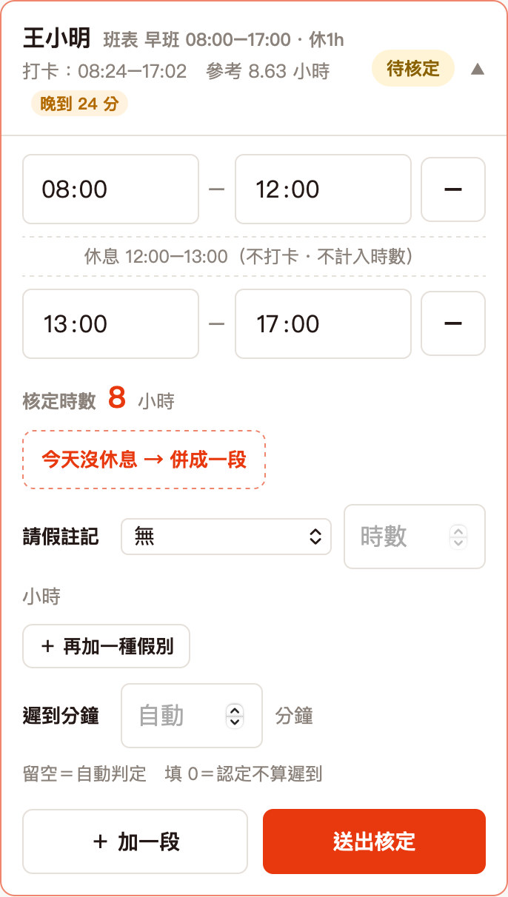
打卡＋單＝核定時數（11/14 起）
系統照實際打卡＋已核准的單算好核定時段，先用跟送出核定同一套規則檢查一次（只檢查，不寫入）。班表只拿來比對、當上限。
| 核定通過（綠框） | 打卡和單對得上。綠框寫好時段和時數，按 核定 N 小時 直接送出（不跳確認框）。要改時段按 手動改時段，改完會再檢查：時段一改，右上角當下就寫「檢查中…」、舊的綠框變淡、核定鈕先不能按，檢查完才恢復（11/20 起，不用再等一下才看到變化）。 |
|---|---|
| 未符合（灰框） | 寫出「要補齊」哪張單（加班單、忘打卡單、假單或補休單）、或「要處理」哪張單（例：加班單超過打卡）。核定鈕灰掉、不能送出；能幫同仁開單的有 幫同仁開單。補好、核准後會自動變成「核定通過」。 |
- 早到、晚走沒有加班單（11/16 起）：當天沒滿 8 小時就照打卡算（例：C 班 17:00–22:00、22:33 才打卡 → 算到 22:30，共 5.5 小時）；超過 8 小時的部分要加班單，沒有就不算（例：整天班 8 小時、晚走 47 分 → 照班表）。
- 遲到：開頭留班表、照標「遲到 N 分」，薪資照扣。
- 早退、中途離開：單段班下班早走、午休前就走、走了整天沒回來，照打卡算、不補、不記早退（二段班中間離開又回來也一樣，見下一條）；正職不到 8 小時要有假單或補休單。有請假的，請假前提早走算到假單開始、記早退；二段班、三段班中間那段提早走（後面還有班）算到那段班結束、記早退。細節看上面「請假那天，上班時段和遲到早退怎麼算」。
- 二段班中途離開又回來：同仁在上班時段中間打卡離開、又回來（例：核定 16:00–20:00，打卡 15:58–16:03、17:24–20:00），系統不會自動記遲到。核定頁那個人的卡片會出現橘色提醒「打卡段數和班表不同（中途離開）」，請你自己判斷：要不要算他遲到、算幾分，由你決定（需要記就在「遲到分鐘」自己填）；是公出或有正當理由，就不用記。（原本預定 11/22 起中途離開自動記遲到，2026-11-21 決定不做，一直照這一條做法。）
- 忘打卡單：補的時間超過班表的部分不算（要另外有加班單）。
- 打卡時間差 15 分鐘內算對得上；其他只往少的方向取整到 15 分。
卡片上方寫「核定通過 N 人・還不能核定 N 人」。一頁核定的檢查讀不到時（網路或打卡系統忙），先照班表分類，上方有提示和「再檢查一次」，按核定時由打卡系統再判一次（見上面「先檢查、再核定」）。11/1（含）起的日子：每一張打卡跟核定時間差超過 30 分鐘（剛好 30 分不用），要每張卡選一個原因（臨時調班／主管同意／打卡機問題／其他自己寫），卡片標「要選原因」，選好才能核定；原因會存進核定紀錄。缺加班單、忘打卡單、假單時照舊要補單，寫原因不能代替補單。已經記成遲到或早退的那段不用再選（見上面「打卡跟核定差超過 30 分鐘要選原因」）。
確認上下班時段
- 系統會先照班表或打卡幫你填好時段。對照打卡看一下對不對，不對就直接改時間。
- 中間有休息的店，休息時間會自動切開，不算時數。那天真的沒休息，打開「更多」按 今天沒休息 → 併成一段。
- 多段班（例如中午、晚上各上一段）：一段一列。不夠打開「更多」按 ＋ 加一段，多的按右邊 － 刪掉。
- 「核定時數」會跟著自動算，送出前看一眼。
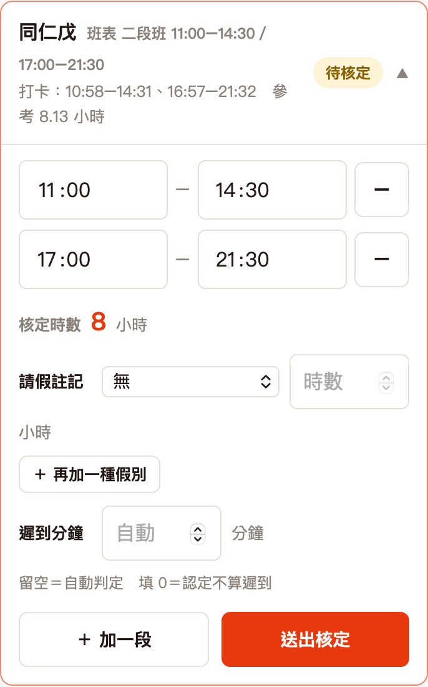
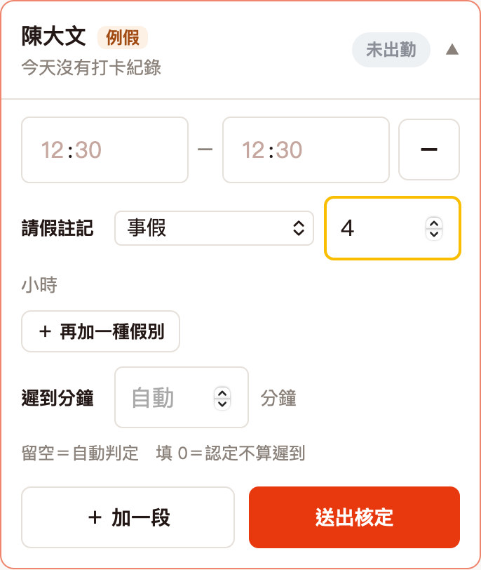
請假註記、遲到分鐘
- 這兩欄在卡片的「更多」裡。
- 請假註記：同仁那天有請假，選假別、填幾小時。已經用完額度的假別會反灰。整天請假可以不填上班時段。
- 生理假看「次」不看小時（2026-11-18 起）：下拉會寫「生理假（今年已請 N／3 次）」。每年（1/1 起算）3 次、每月 1 次；同一天不管請幾小時、分幾段都算 1 次，一天最多 8 小時，核定時一天超過 8 小時會被擋（一頁核定與手動修改的完整頁，按送出前就會先擋，寫「生理假一天最多 8 小時，目前填了 N 小時」，不用等打卡系統退回）。第 4 次起不能請也不能核准，請同仁改辦病假；主管代開也一樣檢查。計時同仁不適用，請改請病假或事假。已核准、但那天核定成別的假的生理假單，不佔次數。
- 病假用完改請事假：今年病假額度剩 0 才會擋，審核中或已核准還沒核定的病假單也算已用掉。請事假時，不再出現「本月第幾次」的提醒。
- 假別額度不夠，送出前就擋（11/20 起）：卡片上只會先標額度「已用完」這類明顯不行的（標籤「假別要確認」）；剩下一點、但不夠這次登記的，要按核定那一刻才擋。系統這時會重新向打卡系統問最新額度，不夠就不送，畫面（一鍵核定寫在「沒有核定成功」那一行、也會留在那位同仁的卡片上；手動修改寫在送出鈕旁的紅字）會寫：
- 「假別額度不夠：特休 只剩 4 小時，這次要再登記 8 小時，這次沒有送出」：這個假別剩的小時數，比這次要登記的少。
- 「假別額度不夠：○○假 只剩 N 小時，這次要再登記 M 小時（○○假 併入 △△假 的額度計算），這次沒有送出」：有些假別超過自己的額度後，會併進另一個假別一起算；這句是說併進去之後，那個假別的額度不夠了。
- 「假別額度剛更新：特休 額度已用完，這次沒有送出」：你打開畫面之後，這個假別的額度已經用完（例如剛有別張單用掉）。
- 「假別額度讀不到，含請假的核定這次沒有送出，請稍後再試」：沒問到額度，所以含請假的人先不送；過一會兒再按一次就好。
- 遲到分鐘：留空＝系統自動判斷；填 0＝你認定不算遲到；填數字＝認定遲到幾分鐘。
- 同仁已經送過請假單、你也核准了，這裡會自動帶好，不用重打。
出差怎麼填
- 「請假註記」選 出差。
- 後面填出差幾小時。填幾小時就核定幾小時，會跟上面的上班時段加在一起。
- 出差那段不要再填進上班時段，不然會算兩次。
- 整天出差：把上班時段那列按 － 刪掉，只填出差時數。
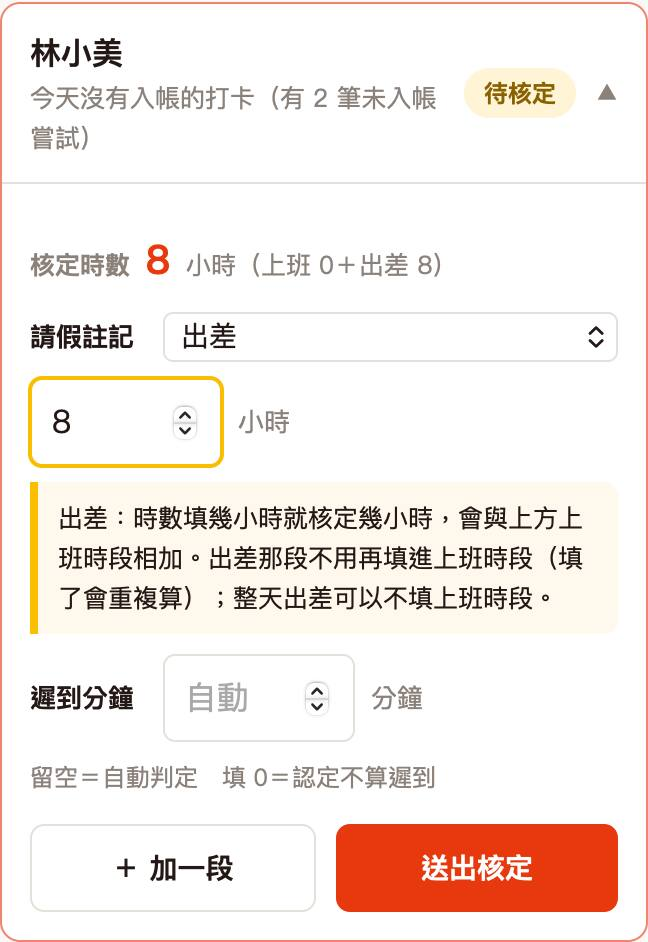
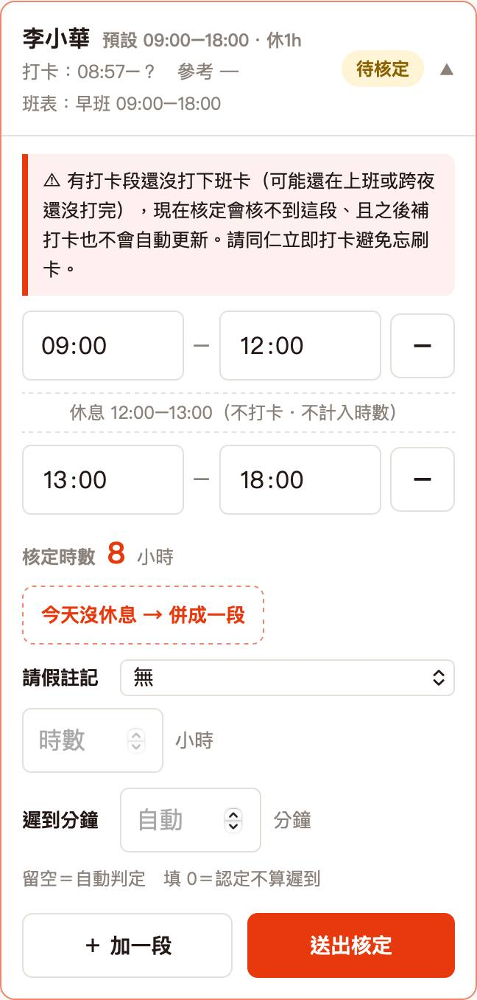
紅色「還沒打下班卡」
卡片出現紅框寫「有打卡段還沒打下班卡」，意思是：
- 同仁打了上班卡，還沒打下班卡。可能還在上班，也可能忘了打。
- 現在核定，這段核不到；之後同仁補打卡，也不會自動更新。
怎麼做：人還在店裡就等他下班打完再核。已經走了，請他馬上打卡；打不了就請他送「忘打卡」申請（見第 3、5 段）。
送出、改錯重送
- 按 送出核定，會跳出確認框列出時段和時數，沒問題按 送出。
- 成功會出現綠色「✓ 已核定 N 小時」，卡片自動收起，換下一位。
- 卡片右上角的標籤：綠色＝正常。整天出差、全天請假或忘打卡，要有已核准的申請單，內容和核定時數都對得上才是綠色；紅色代表有狀態要看一眼，例如遲到早退，或申請單對不上。忘打卡顯示綠色仍會算一次忘打卡。
- 發現填錯：點開那張卡，改好後按 重新送出核定。以最後一次送出的為準。
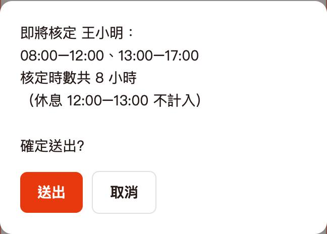
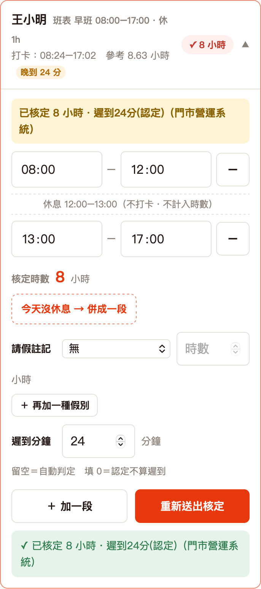
3申請審核
同仁從 LINE 送的加班、請假、忘打卡、出差單都在這裡。最舊的排在最上面。
每一筆看什麼
- 左上標籤：請假、加班、出差、忘打卡。補休是請假的一種，會多一行「本月補休明細：加班 X − 補休 Y ＝ 補休還剩／還欠 N 小時」。補休可以先休後補，欠的要在當月用加班補平。
- 內容、原因、送出時間。
- 當天打卡紀錄：那天同仁實際按了什麼。忘打卡單特別要看這裡（第 5 段有說怎麼看）。
- 有附照片或文件會有 看附件。
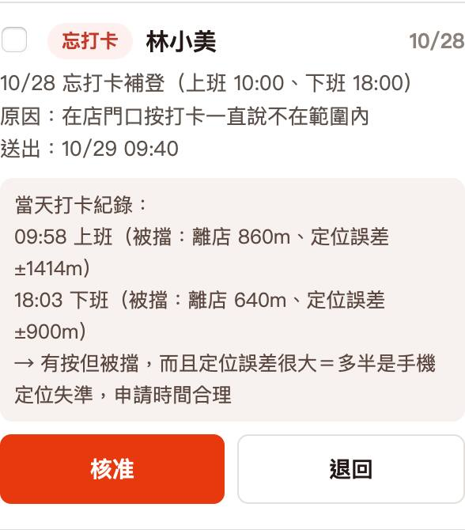
核准
- 按 核准，確認框再按一次 核准。
- 出現「✓ 已核准」就好了。
退回一定要寫理由
- 按 退回，下面會跑出理由欄。
- 寫理由（最多 100 字），按 確定退回。
- 理由會原文給同仁看，請寫清楚他要怎麼改。沒寫會提示「請寫退回理由」。
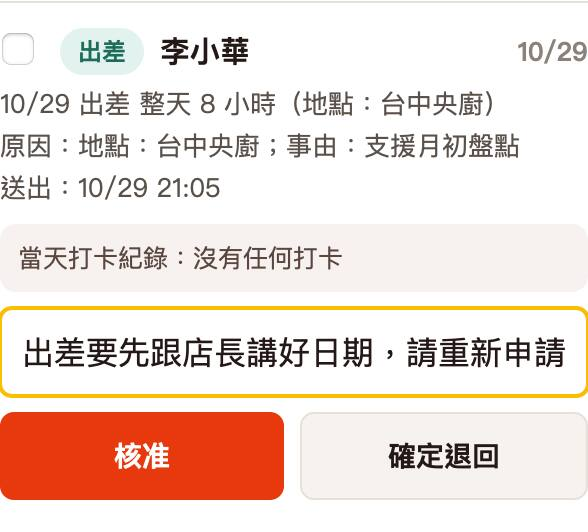
同一天多段加班：框在一起，可以一起核准
同仁一天有好幾段加班（例：中午 11:00–14:00、晚上 17:00–21:00；加班最多可以填四段，例如午休前後、收班後被切成三、四段），在 LINE 一次送出，系統會拆成兩～四張單，在這裡用一個黃色框框在一起，標題寫「林小美 11/15 加班兩段・共 7 小時」（三段、四段就寫「加班三段」「加班四段」）、右上標「同一次送出」。
- 當天打卡紀錄、原因、送出時間只列一次；每一段各列一行（第 1 段、第 2 段…最多第 4 段），各自有 核准、退回，各段可以分開處理：一張核准、一張退回都可以。
- 全部都要核准，按框底下的 兩筆一起核准（三段、四段寫「3 筆一起核准」「4 筆一起核准」），確認框再按一次，一次核准全部。先處理掉其中幾張，框底下的鈕會跟著剩下的張數改。
- 其中一張處理掉以後，框就消失，剩下那張跟平常的單一樣。
- 勾選、全選、「核准勾選的 N 筆」照舊，框裡每一張都有自己的勾選框。
- 核准後到「核定工時」，兩段的時段會照兩張單自動填好；已核准的申請那一列會標「同一次送出 第 1／2 段」（四段就標第 1／4 段到第 4／4 段；其中一張作廢了，剩下的重新數，例如剩三張標第 1／3、第 2／3、第 3／3），讓你知道這幾張是同一次送的。核定的規則跟分兩次送完全一樣，沒有改。
要附證明的假，沒附就不能核准
病假、住院傷病假、公傷病假、婚假、喪假、產假、流產假、產檢假、陪產檢及陪產假、安胎休養假，同仁要附證明。
還沒附的單，按核准會跳紅字「病假要附證明，同仁補上後才能核准」。請同仁補上附件，再來核准。退回不受影響。
一次核准好幾筆
- 勾每一筆左邊的框，或勾「全選」。
- 按 核准勾選的 N 筆，確認後一次核准。
一次最多 30 筆。只能一起核准，不能一起退回，退回請一筆一筆來。已經被處理過的會自動略過，畫面會寫原因。
同一天有好幾張單
同一位同仁同一天核准了好幾張（例如加班＋忘打卡、或同一件事送了兩次），到「核定工時」那天系統不會自己填，會用一個框把每張單逐張列出來。比較舊、可能被新單取代的那張會標「可能是舊單」。
- 對一下哪張才是對的。每張單旁邊有兩顆鈕：依這張填、作廢。
- 舊的、重複的那張按 作廢，寫作廢理由（必填）再送出，那張就不算了。
- 剩下的單如果是不同假別（例如上午事假、下午病假），系統會自動填成好幾列。一天最多記 4 種假別。
- 只想照其中一張填，就按那張的 依這張填。
- 時段和假別對了，再按 送出核定。
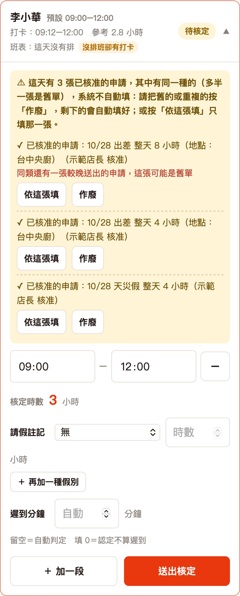
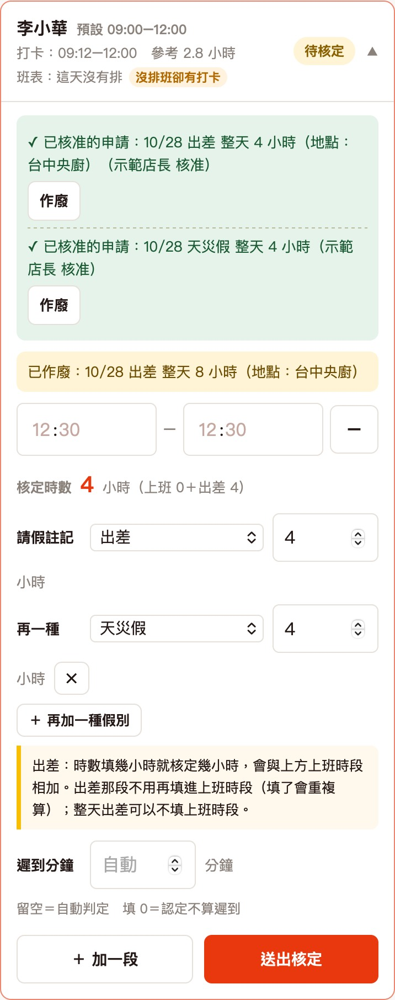
4誰核誰（11/4 起）
規則：在哪家店打卡，工時和忘打卡單就給那家店的店長核（薪資跟打卡門市請款）；加班、請假、出差單給本人原單位的上層審。
- 你自己的加班、請假、出差單會放在「申請審核」最下面「我自己送出的」，標「等上一層主管審核」。核准、退回、作廢的按鈕都按不下去，這是正常的。你自己的忘打卡單跟同仁的放在一起，自己核。
- 主管幫你開的單（超過 4 天或沒綁 LINE 時）也放在這裡，標「（主管名字）幫開」，同樣不能自己審，由上層主管或系統管理員審核。
- 這些單不算進申請審核的紅色數字，也不會出現在首頁待辦。
- 上層主管會在他們的考勤管理裡看到，標「值班主管本人」。區域負責人（督導或區經理）、總監可以核准、退回，也可以作廢。區域負責人由人資在「同仁名單 → 區域」設定。
- 上面都沒有人的店，由人資主管審。
- 店裡沒有店長也沒有兼任店長：工時和忘打卡單只剩人資主管能核，區經理、督導、總監都不會補上。請人資到「權限設定 → 個別例外」設兼任店長。
- 同仁離職後 7 天內（離職隔天帳號停用起算）：原本核他工時的人照樣看得到他，只能核到離職日那天，離職日以後的日子按核定會被擋。加班、請假、出差單不再列。第 8 天起就看不到了，最後幾天記得在這 7 天內核完。
- 管理系統沒填單位或職稱、系統又推算不出是哪家店的同仁：工時和所有申請都由人資主管（和系統管理員）核，店長看不到。請人資把單位、職稱補上。
- 你自己的工時照舊自己核，在「核定工時」跟同仁一樣處理。
- 單子狀態：在 LINE 按圖文選單的「加班請假」，打開卡片後切到「我的申請」看。
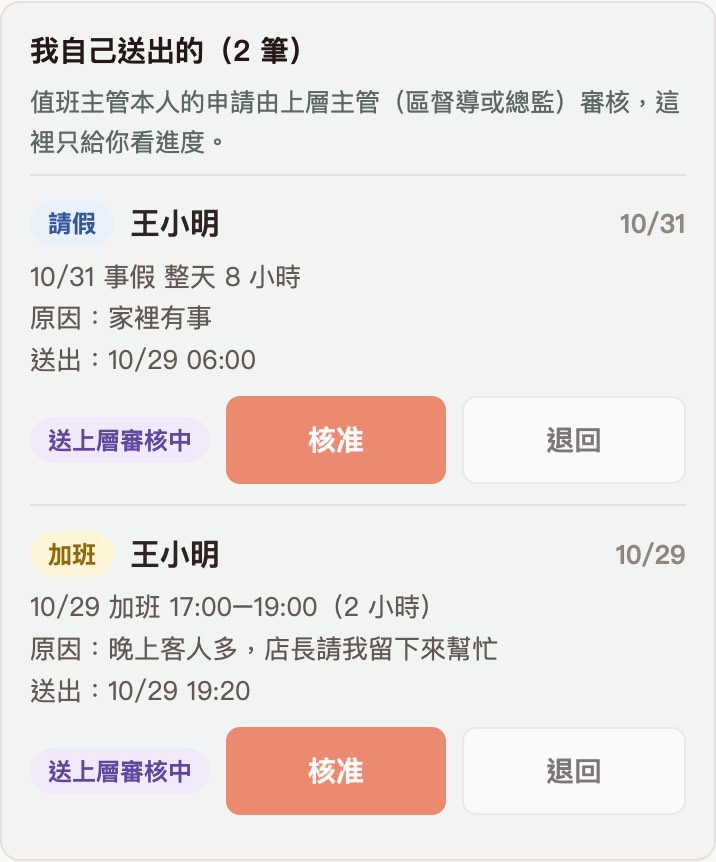
5常見狀況
同仁忘了打卡
- 請他在 LINE 按圖文選單的「加班請假」，機器人會回一張卡片；打開後切到「忘打卡」那一頁，填實際上下班時間和原因送出。
- 你在「申請審核」核准。
- 到「核定工時」那天，時段已經帶好，確認後送出。
不要自己在核定工時直接補時間了事。有申請單，薪資和人資查得到原因。
跨店支援的同仁
- 同仁到別家店打卡（包含督導、行政、總部同仁），那幾天的工時和忘打卡單由打卡那家店的店長核；加班、請假、出差單還是回原單位主管審。卡片會標「支援（原單位）」。
- 你店裡的人去別店支援：他在那邊的工時你只看得到、不能改；他的加班、請假、出差單還是你審。有問題請跟那家店的店長說。
- 班表只排在主要單位（11/18 起）：同仁在別家店的支援帳號列不能排班，考勤預填與比對只看「主要單位排到這家的外店班」，考勤異常提醒也不列支援帳號列。主要單位以管理系統「同仁名單」上的單位為準；單位不對，請聯絡管理系統的管理者，到同仁名單更正。排班細節看排班手冊。
- 支援那家店沒有他的班表、又有已核准的加班單（11/18 起）：預填照他在你店打卡的時間算，加班單只是標出哪一段算加班，不會把其他時間截掉。例：總部同仁到金山支援 08:53–11:00，在金山補了 10:15–11:00 的加班單 → 金山預填 09:00–11:00＝2 小時（以前會只剩 10:15–11:00＝0.75 小時）。同一天兩店合計超過 8 小時的部分，照加班歸屬規則由支援那家吸收。
打卡一直說「不在範圍內」
看忘打卡單的「當天打卡紀錄」。如果寫「被擋：離店 860m、定位誤差 ±1414m」這種很大的誤差，系統會加一句「多半是手機定位失準，申請時間合理」。這種可以放心核准。
請同仁照下面設定，之後就不太會再發生：
| iPhone | 設定 → 隱私權與安全性 → 定位服務 → LINE：選「使用 App 期間」，打開「準確位置」。 |
|---|---|
| Android | 設定 → 位置：打開定位，打開「Google 定位精確度」（有的手機叫「提高精確度」）；LINE 的位置權限選「精確」。 |
| 兩種都要 | 打開 Wi-Fi（不用連上，開著就會定位比較準）。在店裡靠門口或窗邊再打一次。 |
人就在店裡還是打不了：點上方的 打卡 QR 分頁（在「申請審核」旁邊），讓他用 LINE 掃，掃完直接按上班／下班。QR 每 30 秒換一次。
填到一半會不會不見（11/20 起）
用個人帳號登入時，每次從管理系統點進這些功能，系統都會幫你換一張新的登入憑證，你不用做任何事。換的時候，下面這些畫面不會被清掉，填到一半的內容都還在：
- 排班、佈告欄、耗損、調撥、現金帳、盤點、貨單、核定工時。
只有這幾種情況，畫面才會重新整理、回到乾淨的狀態：
- 換人：換另一個人登入。
- 換店：切到另一家門市。
- 權限被調整：你的權限有被改過。
- 自己按「登出」：會連調撥填到一半的單一起清掉。這是故意的，共用的平板不會把上一個人填的東西留給下一個人看到。
- 登入超過 12 小時：要重新登入，調撥填到一半的單也會一起清掉。
用門市帳號（整家店共用的那組帳號）登入的人，一切跟以前一樣，沒有改變。
申請單總表、核定紀錄：「資料更新於」與手機畫面（11/20 起）
這兩個分頁讀的是同一份「整月申請」。系統先用已存好的整月資料，所以上方會有一行灰字「資料更新於 今天 13:00・換月份會重新讀取」，告訴你這份資料是幾點的（不是今天的會寫成「11/19 18:00」這樣；選全部門市時寫最舊的那家）。
- 這份資料讀進來就放著，不會自己換新；換月份才會重新讀一次。剛送出、剛核准的單看不到，等一下再換月份、或重新整理頁面。
- 沒有這行灰字：表示這次是直接向打卡系統讀的，就是最新的。
- 灰字只在畫面上，列印一覽表、單張、補休明細和匯出的 Excel 都不會有。
- 手機（螢幕窄）上，申請單總表底下的「補休明細」表格不會再比畫面寬、不會左右晃動。
畫面跟這份手冊不一樣
先在電腦按 Cmd＋Shift＋R（Windows 按 Ctrl＋F5）重新整理，手機把網頁關掉重開。還是不對，截圖傳給資訊部。
本手冊截圖全部用示範資料拍的：門市（示範門市、示範二店）、同仁姓名、日期都是假的，不是任何一家店的真實資料。
6正職上班日要滿 8 小時（11/1 起）
正職同仁在班表上是上班的日子，核定的上班時數＋出差時數＋已核准的假單時數要滿 8 小時才能核定。只看這三個加起來，不看班表排了幾小時：班表本來就排不到 8 小時，也一樣要補假單。計時同仁、排休日不檢查。
不到 8 小時怎麼辦
- 核定時數下面的「正職上班日」那行變紅字，寫著還差幾小時。按送出會被擋，訊息寫「正職上班日要滿 8 小時…還差 N 小時，要有已核准的假單或補休單」。
- 請同仁在 LINE「加班請假」送假單（任何假別都可以，補休也是假單裡的一種），時數至少補足差的部分。
- 你在「申請審核」核准後，回到那天，「合計」那行會算進去，變成滿 8 小時就能送出。
同一天在兩家店上班（11/18 起的規則，套用 11/1 起的日子）
- 同一單位才相加：墨竹亭和總部、總部和小辛辣算同一單位；小辛辣和墨竹亭不算，各算各的。央廚跟誰都算同一單位。
- 兩家核定時數加起來滿 8 小時就可以。先核的那家，如果另一家有打卡但還沒核定，會先讓你送出；後核的那家會檢查兩家加起來夠不夠。
- 兩家加起來超過 8 小時，超過的部分算加班，加班單開在支援單位（同仁去支援的那家），不管誰先上、誰後上。
- 支援單位最多吸收它自己那天上班的時數，超過的留在原單位、加班單開在原單位。
- 同一天支援兩家以上：只在支援單位之間比，上班時數比較長的那家吸收加班；兩家一樣長，算比較晚開始上班的那家。
| 例子 | 合計 | 加班單開在哪 |
|---|---|---|
| 原單位總部 6.75 小時＋支援金山 2 小時 | 8.75 | 金山 0.75 小時；總部不用開 |
| 原單位 9 小時＋支援店 1 小時 | 10 | 支援店 1 小時（它只上 1 小時）＋原單位 1 小時 |
| 支援 A 店 4.5 小時＋支援 B 店 4 小時 | 8.5 | A 店 0.5 小時（時數比較長） |
| 原單位 2 小時＋支援 A 店 4 小時（10:00 起）＋支援 B 店 4 小時（15:00 起） | 10 | B 店 2 小時（一樣長，B 比較晚開始） |
11/1～11/13 已核定、不到 8 小時的日子
這條規則上線前已經核定、但不到 8 小時的日子，11/13 已經撤銷核定（共 25 天）。這些卡片會變回「沒核定」，照上面的步驟補單後重新核定。月底結薪前要補完。
誰算正職、怎麼改
| 門市 | 看排班管理裡那位同仁的身分（正職或計時），不用另外設定。 |
|---|---|
| 央廚 | 「排班管理 → 央廚 → 固定班別」每個人旁邊有 正職 計時 兩個勾選框，二選一。都沒勾的人不會檢查，頁面上會用紅字提醒還有幾位沒勾。 |
| 總部 | 「排班管理 → 部屬班表」點那位同仁，卡片上有 正職 計時 勾選框。都沒勾＝正職。只有人資主管、系統管理員能改，其他人只看得到「正職」或「計時」。 |